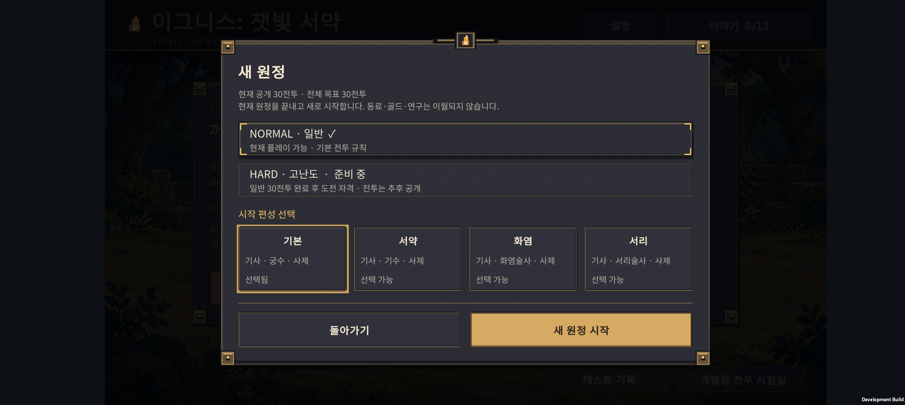
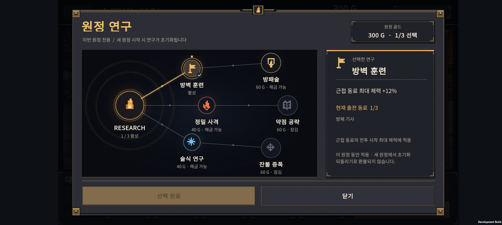
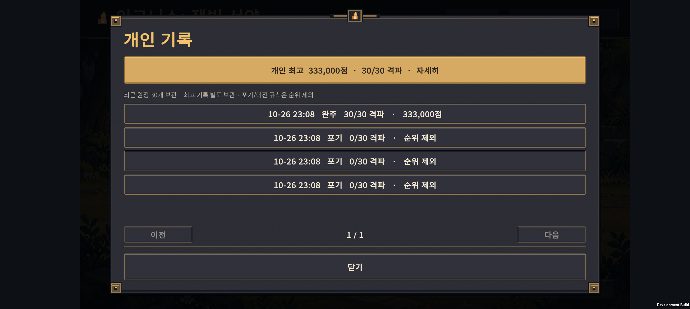
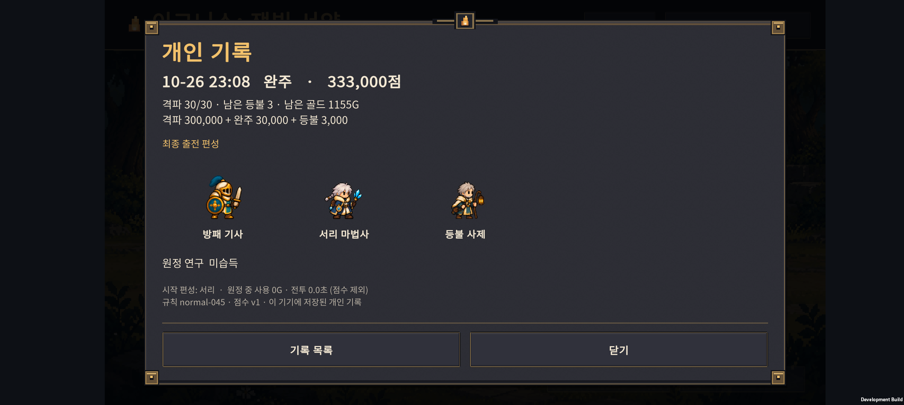

v0.45 · 매 원정 새로 시작하는 연구와 개인 기록
2026-10-26 · IGNIS: ASHEN OATH · Normal 30전투
새 원정은 영구 능력치 보너스 없이 40G·연구 0개로 출발한다. 골드로 찍는 원정 연구는 같은 원정에서 유지되고, 새 원정을 시작할 때 초기화된다. 개인 최고 점수와 최근 기록을 연결했다.
합의한 개편 기준 · 자동 전투 상세 결과 · 결과 JSON
이 문서는 v0.45 구현 당시 기록이다. 현재 지역 해금·수치·개인 기록 분리는 v0.46 구현 기록을 따른다.
달라진 플레이 규칙
| 항목 | 구현한 동작 |
|---|---|
| 새 원정 | 기본·서약·화염·서리 모두 선택 가능. 기본 동료 3명, 40G, 등불 3개, 연구 0개 |
| 영구 강화 | 새 원정에 체력·피해 보너스를 전달하지 않음. 예전 PT 지급·구매 중단 |
| 원정 연구 | 기존 골드 전술을 통합된 연구로 표시. 3계열·6노드 중 최대 3개 |
| 연구 가격 | 기초 40G, 상위 60G. 기초 6전투, 상위 11전투와 선행 연구 필요 |
| 다음 전투·패배 재도전·이어하기 | 같은 원정의 동료·성장·골드·연구 유지 |
| 새 원정으로 전환 | 진행 중 원정은 포기 기록으로 남기고, 연구·동료·재화를 새로 시작 |
| 계속 남는 정보 | 이야기·성과·설정·안내 완료 상태·개인 기록 |
연구를 구매하지 않고 동료 소환·성장에 투자하는 선택도 가능하다. 이번 변경에서는 유닛/적 전투 수치와 연구 비용을 조정하지 않았다.
휴대폰 화면
Galaxy Buddy2(2408×1080)에서 직접 조작·캡처했다. 아래 11전투 연구와 30전투 기록은 저장 및 화면 확인용으로 만든 시험 데이터다. 기본 동료로 30전투를 실제 완주했다는 의미가 아니다.
같은 시작 선택권

연구 구매 후 재접속
340G에서 방벽 훈련을 구매하면 300G·연구 1개가 된다. 강제 종료 후 이어하기에서도 유지되며, 새 원정에서는 40G·연구 0개로 돌아오는 것을 저장 파일과 화면에서 확인했다.

개인 최고와 최근 원정
최근 30개를 보관하고 최고 점수는 별도 보존한다. 목록에서 결과를 누르면 최종 출전 동료·연구·격파 수·등불·지출·전투 시간·규칙 버전을 확인한다. 페이지 버튼과 하단 구분선이 겹치던 부분도 수정했다.


위 사진의 3명은 화면 검사용 시험 편성이다. 기본 세 명으로 실제 완주했다는 의미가 아니다. 실제 출전은 최대 5명이며 종료 당시 출전 동료가 표시된다.
점수 규칙
격파 전투 수 × 10,000 + 30전투 완주 보너스 30,000 + 남은 등불 × 1,000
- 30전투·등불 3개 완주: 333,000점.
- 전투 진행 중 표시는 잠정 점수이며, 완주하거나 등불을 모두 소진했을 때 기록한다.
- 진행 중 새 원정으로 바꾸면 ‘포기’로 보관하고 최고 점수에서 제외한다.
- 같은 원정 종료는 한 번만 등록한다. 동점은 기존 최고 기록을 유지한다.
- 준비 시간·배속·피해·회복·남긴 골드에 추가 점수를 주지 않는다. 전투 시간은 정보용이다.
- 현재는 기기 안의 개인 기록이다. 온라인 순위·서버 검증은 아직 없다.
시작 조건의 누적 강화 차이는 제거했지만, 무작위 소환 운과 편성의 강약은 남는다. 만점 동점이 생기기 쉬운 초기 산식이므로 온라인 순위 도입 전에 별도 검토가 필요하다.
이전 저장 보존
v0.44 이전 원정은 ‘이전 규칙 원정’으로 표시하고 원래 보너스를 유지해 이어할 수 있다. 새 점수 순위에는 포함하지 않는다. 업데이트 후 새 원정부터 새 규칙을 사용한다.
예전 연구 ID와 남은 PT는 이행 확인용으로 보관하며 새 원정 재화·보너스로 환산하지 않는다. 기존 PlayerPrefs 이행과 A/B 저장·백업·손상 보관은 유지한다. 새 형식은 계정 v2 / 원정 v9 / 성과 v3 / 개인 기록 v1이다.
Unity가 없는 최고 기록을 빈 객체로 복원하는 문제가 검사 중 발견되어, HasBest와 HasRun을 따로 저장하도록 수정했다. 빈 계정도 실제 Unity 직렬화 왕복 검사를 통과했다.
검증 결과
| 검사 | 결과와 범위 |
|---|---|
| 신규 원정·연구·기록 코어 | 1,201조건 통과. 실제 첫 전투 80쌍, 30전투 저장 경로, 30개 패배 종료 경계 포함 |
| 기존 기능 회귀 | 원정 2,052 · 성과 410 · 이전 연구 61 · 계정 저장 150 · 학습/요약 5,744조건 통과 |
| Unity 통합 | 저장/설정 18조건 + 실제 새 원정·기록·빈 계정 등 17조건 통과 |
| 자동 전투 비교 | 4편성·3성장 정책·3연구 계열·4지출 방식의 유효 조합 432회 |
| 별도 시드 확인 | 추가 8회, 저장·전투 재시작 동일성 3,280조건 통과 |
| Buddy2 | 기존 PlayerPrefs 이행, 이전 규칙 이어하기, 새 원정, 연구 구매/재접속/초기화, 개인 기록 목록/상세 조작 확인 |
자동 원정 440회는 실제 전투 계산으로 진행했다. 코어 저장 경로와 UI용 강제 승패 데이터는 이 수에 포함하지 않았다. 반복 체크 수는 고유한 버그 유형 수나 사람이 플레이한 횟수가 아니다.
실기기 확인 전 원본 저장·설정을 백업했으며, 완료 후 시험 데이터를 제거하고 원본 파일을 바이트 단위로 복원·확인했다.
밸런스에서 확인한 점
기본 편성/최종 진화 중심/방어 연구에서 미구매 4/8, 조기 구매 6/8, 지연 구매 6/8 완주였다. 반면 성가 기수 확보 정책에서는 조기 구매 0/8, 지연 구매 2/8이었다. 연구 구매를 먼저 하는 것이 항상 정답은 아니다.
서리 편성은 이번 고정 정책에서 상대적으로 약했다. 정밀 연구/최종 진화/지연 구매에서는 비교 시드 2/4, 별도 시드 1/4로 완주했지만, 다른 정책 다수가 실패했다. 사람의 승률로 해석하거나 서리가 무조건 불가능하다고 결론내릴 수는 없다.
기본 최종 진화, H-01, H-05를 목표로 하는 세 정책 모두 전체 비교 안에서 완주 사례가 있다. 실제 플레이어가 그 경로를 이해할 수 있는지는 별도 관찰이 필요하다.
다음 우선 작업
- 서리 시작 편성의 6~20전투 성장 선택과 화력 부족을 재현하고 원인을 좁힌다.
- 술식 연구의 적용 대상·효과와 소환 두세 번을 포기하는 비용이 납득되는지 비교한다.
- 처음 플레이하는 사람에게 새 원정·이어하기·연구 초기화가 명확한지 확인한다.
자동 결과만으로 전체 적을 낮추지 않는다. 다른 편성·시드에서도 효과를 확인한 뒤 필요한 역할과 구간만 조정한다. Hard 전투, 온라인 순위, 영어 전체 번역은 이번 범위에 포함되지 않는다.
실행과 변경 파일
./tests/ExpeditionReset/run.ps1
./tests/ExpeditionRun/run-end-to-end-balance.ps1 -FirstSeed 45201 -Count 4 -Spending delayed -Policy final -Starter frost -ResearchBranch precision -Interruptions -ReportPath .local-tools/v045-holdout.json
Unity 통합 검사와 APK 생성: Expedition.EditorTools.ExpeditionResetValidation.ValidateAndBuild.
APK: unity/Builds/Android/expedition-combat-prototype.apk — 내부 테스트용 Development Build. 최신 파일의 크기와 SHA-256은 빌드 정보에 기록한다.